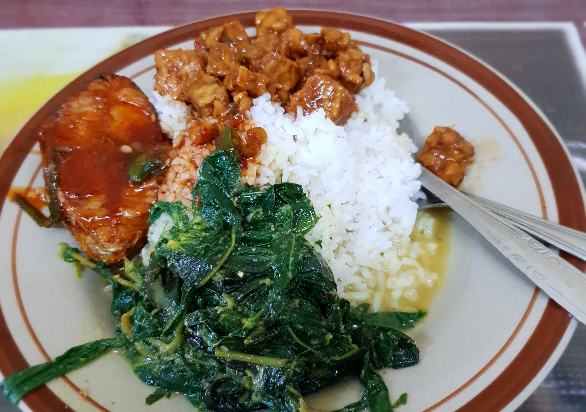
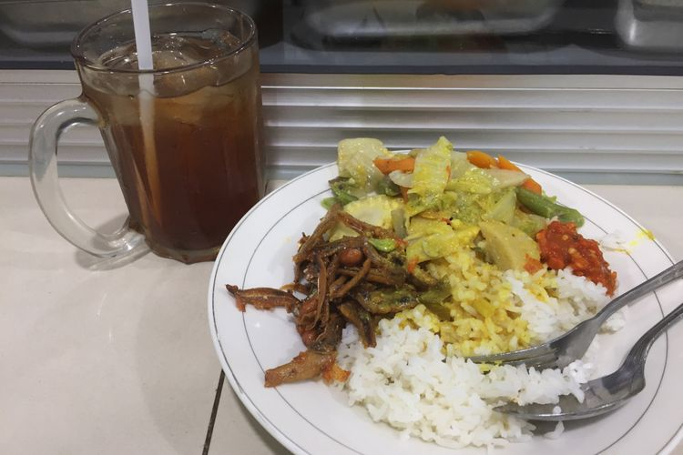

About Us
We Leave A Delicious Memory For You
Warteg adalah tempat makan favorit banyak orang karena menyajikan makanan enak dengan harga terjangkau. Website ini dibuat untuk memudahkan masyarakat menemukan lokasi warteg di Ciputat dengan cepat dan praktis.

